Original research · manuscript in preparation for Radiology: Artificial Intelligence
Abstract
Purpose. To test the claim that registration-free vertebral level identification on a radiograph containing no anatomic anchor (no sacrum, no ribs, no cervical spine) is mathematically underdetermined and must be refused — and to measure whether a short series of overlapping exposures restores what a single exposure cannot hold.
Materials and Methods. Retrospective study of public data. Border-anomaly ground truth was collected for 1,113 CT spines (CTSpinoPelvic1K, VerSe; lumbosacral and thoracolumbar flags read from label voxels) and 144 real lumbar radiographs (BUU-LSPINE authors' four- and six-lumbar reads). A ResNet-18 encoder over fixed-scale vertebra crops with a bidirectional recurrent head over 2–9 vertebrae was trained on eight sources (v2) and on 14 sources including 76,042 decoder-pseudolabelled crops (v5). Held-out windows were stratified by the report's own field-of-view states and by whether the spine was anomalous. The report's recommended geometric detectors were computed from the dataset's corner keypoints on 3,600 lateral and 3,600 AP films.
Results. In the isolated-stack state on real film, exact naming was 97.2% [96.9, 97.4] on ordinary spines (n = 14,492) and 87.2% [84.3, 89.7] on anomalous spines (n = 572); pseudolabel training lowered the anomalous figure to 66.8% [62.9, 70.4]. Those strata are defined by the window's labels; on interior windows whose pixels exclude both ends of the annotated stack, with film-clustered intervals, ordinary lumbar naming was 91.8% [89.4, 94.1] (455 films) and anomalous 66.0% [39.6, 87.2] (12 films), against a placement-blind baseline of 0%. L2–L4 scored 86–91%; L6 scored 45–48%. Of errors, 83% were exactly one level. The report's normal-L5 Wigh band contained 5.1% of ordinary films. Lumbosacral and thoracolumbar anomalies co-occurred (OR 3.61 [2.08, 6.27] on 280 fully graded VerSe subjects; 2.1 [0.9, 5.0] where both junctions were in the field).
And the sweep. At a 9-inch intensifier field with two bodies of overlap, a two-vertebra frame scored 69.6% on its own pixels and 95.1% registered onto a sweep from the sacrum; four-vertebra frames were correct 99% of the time on 82% of frames. Swept downward from C2 on whole-spine renders — the thoracic spine, where a single frame scored 13.4–46.4% — mapped frames scored 97.1–99.3% at full coverage, with the chain complete on 97.4% of spines.
Conclusion. The isolated stack is not underdetermined; it carries information the report said could not exist, with a measured, anomaly-dependent cost that the report's proposed geometric substitutes do not recover — and that a short series of overlapping exposures recovers without a preoperative CT.
Key points
All of them import the vertebra names from somewhere else. None names vertebrae from a freehand sweep alone. Most rows below are not performing this task, and the table says so rather than flattering the last line.
| method | what it requires | task | its own figure | on our films |
|---|---|---|---|---|
| LevelCheck / msLevelCheck | preoperative CT of the patient | registration success, not naming | 99.998%; 0.37–0.42 mm | not runnable without each CT |
| VDVM 2023 | the patient's full-length film | match one frame to that film | 0.733 on 31 images | that reference film is what a sweep builds |
| X23D | CT-trained 3-D reconstruction | screw placement | 88–92% Gertzbein A/B | not a naming method |
| RadGS-Reg | 3-D reference volume | 6-DoF pose | sub-second, millimetre | not a naming method |
| SX-Stitch 2024 / Liu 2026 | implanted pedicle screws | stitching | Cobb agreement 1.95° | cannot run before instrumentation |
| Radlink Panoramic Fluoro | — | stitching only | sub-mm continuity | produces no names |
| Wang 2015 | radiolucent ruler under the patient | stitching by absolute index | — | produces no names |
| MVMS (Huang 2022) | calibrated multi-slot collimator | naming on long-length images | 88.3% | needs the hardware that makes the views |
| ResNet-Transformer | serial CT or fluoroscopy slices | naming | 94.36%, MLE 1.42 mm | different modality |
| this work | nothing but the C-arm | naming, registration-free | — | 95.1% at 2 vertebrae; 99.3% at 3 through the thoracic spine |
Distinct patients per level in training — not crops, because a rare class is learned from people and the same few spines are rendered from many poses.
| level | from CT renders | counted from a landmark | human-read film | pseudolabelled | total patients |
|---|---|---|---|---|---|
| L1 | 2,947 | 3,448 | 710 | 5,995 | 12,361 |
| L3 | 3,079 | 3,449 | 765 | 6,049 | 12,569 |
| L5 | 2,941 | 3,450 | 765 | 5,829 | 12,220 |
| L6 | 168 | 0 | 0 | 0 | 168 |
| T13 | 13 | 0 | 0 | 0 | 13 |
Bank v7 adds the two real-radiograph sources that have never been in a bank. FluoroCap's decoded panels: 2,385 converted upright, carrying 114 L6 and 78 T13 vertebrae. VinDr: 5,369 pseudolabelled lumbar films, 1,127 with the sacrum boxed. The orientation network's recorded rotation is applied to each panel — the boxes were stored in the rotated frame, and 39 of the first 400 panels needed a half turn. Two encoders train on it, cross-entropy and logit-adjusted, each paired to its own head by hash, each measured on interior windows and on a sweep.
Two reading queues are live so the pseudolabels can become real labels: plain radiographs (NHANES, VinDr, Mendeley, whole-spine laterals) and FluoroCap panels shown with the article's own caption. Two readers per film, agreement and Cohen's kappa reported live, disagreements to adjudication. The task is one name per film, because the decoder's error is an offset rather than a permutation.
A decline is not a free retake. All 4,792 query frames were shot again from a quarter-vertebra away. The retakes score the same as the frames they replaced — 81.3% against 82.8% at 82% coverage. The difficulty is in the anatomy and the chain, not that exposure. A decline means count, or sweep further, not move and reshoot.
More exposures is not monotonically better. Four bodies of overlap needs 7.1 exposures instead of 3.1 and loses two points, because every extra frame is another link to get wrong. The knee is at 1.5–2 bodies, about three exposures.
Six interventions aimed at the transitional number; only the sweep moved it. Logit adjustment buys three points on ordinary spines and nothing on variants, settled on 128 anomalous films. Two-view fusion loses: the anteroposterior view alone scores 40–47% with a lateral-trained encoder, and averaging a weak opinion into a strong one costs more than it adds. The transition-role head changed nothing at three weights. Domain randomisation, pretrain-then-finetune and two pseudolabel-admission rules all failed earlier.
One configuration for everything below: a 9-inch image intensifier field (14 cm at the spine), two vertebral bodies of overlap between exposures, sweeping up from the sacrum, on 801 abdominopelvic CT scans rendered as radiographs, each frame independently degraded to look like a separate exposure. Cells are the share of vertebrae given their true name, with a 95% interval and the count.
| true level | ordinary | lumbosacral variant | thoracolumbar variant |
|---|---|---|---|
| Three vertebrae in the frame | |||
| T11 | 94.6% [89.7, 97.2] n=148 | 90.0% [59.6, 98.2] n=10 | 50.0% [9.5, 90.5] n=2 |
| T12 | 95.2% [92.6, 96.9] n=393 | 90.9% [72.2, 97.5] n=22 | 88.9% [56.5, 98.0] n=9 |
| L1 | 94.8% [92.7, 96.3] n=594 | 89.2% [75.3, 95.7] n=37 | 92.3% [66.7, 98.6] n=13 |
| L2 | 95.1% [93.1, 96.5] n=649 | 90.3% [75.1, 96.7] n=31 | 100% [81.6, 100] n=17 |
| L3 | 96.3% [94.4, 97.5] n=587 | 93.3% [78.7, 98.2] n=30 | 100% [78.5, 100] n=14 |
| L4 | 94.5% [91.8, 96.3] n=399 | 93.8% [71.7, 98.9] n=16 | 100% [72.2, 100] n=10 |
| L5 | 94.9% [90.8, 97.2] n=195 | 84.6% [57.8, 95.7] n=13 | 100% [51.0, 100] n=4 |
| L6 | 57.1% [25.0, 84.2] n=7 | — | — |
| Four vertebrae in the frame — better everywhere | |||
| T11 | 95.0% n=200 | 100% n=8 | 100% n=3 |
| T12 | 94.5% n=439 | 100% n=19 | 100% n=7 |
| L1 | 94.7% n=684 | 97.2% n=36 | 92.9% n=14 |
| L2 | 96.0% n=914 | 95.6% n=45 | 94.7% n=19 |
| L3 | 96.2% n=717 | 94.6% n=37 | 93.8% n=16 |
| L4 | 96.0% n=481 | 92.3% n=26 | 91.7% n=12 |
| L5 | 97.9% n=239 | 88.9% n=9 | 100% n=5 |
| L6 | 80.0% n=5 | — | — |
With two vertebrae in the frame — the hardest case — ordinary spines score 93–97% per level, lumbosacral variants 75–100% (L3 is the weak cell at 75.0%, n=12), thoracolumbar variants 50% at T11 and T12 rising to 100% at L2–L4, and L6 66.7% on n=3.
| frames the system is allowed to decline | 99% correct on | 98% correct on | 95% correct on |
|---|---|---|---|
| 4 vertebrae in the frame | 82% of frames | 91% | all |
| 3 vertebrae in the frame | 75% of frames | 87% | all |
| 2 vertebrae in the frame | 33% of frames | 87% | all |
With one body of overlap instead of two, the 99% column halves: 42% of frames instead of 82%.
Sweeping the whole spine downward from C2 — the thoracic spine, where a single frame names 13–46% — three-vertebra frames were named correctly 99.3% of the time. That is 76 spines and about 133 vertebrae, so the per-level cells there hold 1–12 vertebrae each and are not worth reading individually. It says the method works where the clinical problem is worst; it is not a large-sample per-level result.
Wrong-level spine surgery persists because intraoperative fluoroscopy shows a few vertebrae and a surgeon counts from whatever landmark is visible. Automated level identification on such images has been approached almost entirely by registration to a preoperative CT, which imports the level identity rather than reading it. A registration-free classifier that reads identity from local morphology would remove that dependency—but a technical feasibility analysis of exactly this problem concluded it cannot be done.
The report's argument: with neither a cranial nor a caudal anchor in frame (its State C, the isolated stack), the bounding boxes of a five-lumbar spine resemble those of a six-lumbar spine with its top body cropped off,
so absolute level assignment is "mathematically underdetermined," "mid-lumbar bodies (L2, L3, and L4) are largely exchangeable across subjects," and a system in State C "should formally refuse to assign absolute anatomical labels." It proposed geometric indices from corner keypoints instead—an intercrestal-line offset, a Wigh squaring index of the lowest body, sacral slope, a residual S1–S2 disc—arguing they transfer across imaging domains because they are ratios.
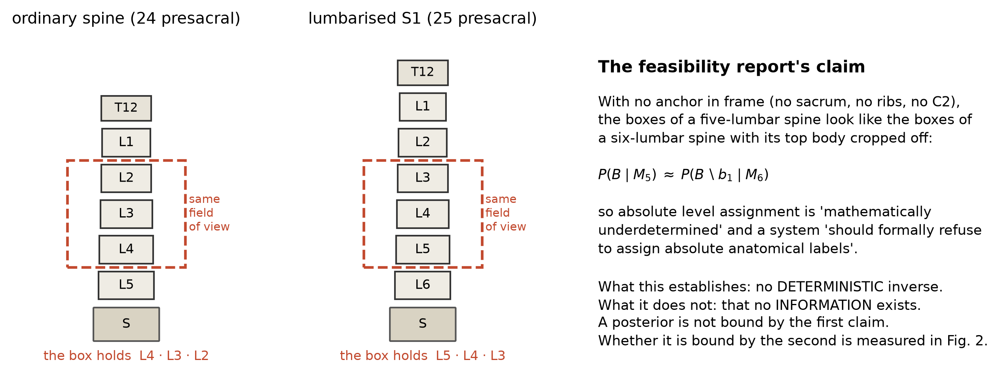
A detector returns an ordered stack of vertebra boxes B = (b₁ … bK) from one image I. The task is a posterior over joint labelings Y ∈ 𝓛K, 𝓛 = {C1…C7, T1…T12, T13, L1…L6, sacrum}, where T13 and L6 are variant classes an ordinary spine skips. The function learned is
implemented as a per-vertebra encoder e(bk) on a fixed-scale crop (96 px per body on a 320 px canvas, with a target-marker channel so the classifier cannot read size as identity), followed by a bidirectional GRU over the sequence e(b₁) … e(bK) trained on windows of mixed length so that the film's own span is not a cue. The report's claim is that for windows with no anchor, P(Y | I, B) is flat over adjacent labelings. The measurement below is of that posterior's concentration, on real film, on anomalous spines.
Two ends of the column were labelled separately, because the study's hypotheses concern whether they travel together. For CT, 1,113 spines (802 CTSpinoPelvic1K + 311 VerSe) carry a lumbosacral flag (sixth lumbar body by voxel count, or an adjudicated Castellvi grade) and a thoracolumbar flag (thirteenth thoracic, lumbar rib, or a rib-bearing count ≠ 12 where the field reached the twelfth rib), read from the label volumes—not from any manifest, after a manifest T13 field was found to say 18 where the voxels said 6. For real radiographs, BUU-LSPINE ships its authors' own per-study reading of four-lumbar (129) or six-lumbar (15) anatomy, four corner keypoints per body, S1 end-plate corners on laterals, and a pixel spacing of 0.175 mm. Its negatives are contaminated by construction—a Castellvi I–IV segment on a five-lumbar spine is not recorded—so every specificity or AUC against it is a floor.
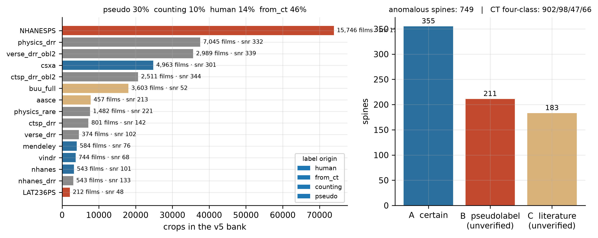
| Source | Domain | Label origin | Crops | Films | C / T / L | L6 | T13 | SNR |
|---|---|---|---|---|---|---|---|---|
| NHANESPS | real film | pseudo | 73,921 | 15,746 | 37,049 / 1,630 / 35,170 | 0 | 0 | 175 |
| physics_drr | CT render | from CT | 37,556 | 7,045 | 4,209 / 13,734 / 19,613 | 145 | 7 | 332 |
| verse_drr_obl2 | CT render | from CT | 35,634 | 2,989 | 4,783 / 18,821 / 12,030 | 399 | 48 | 339 |
| csxa | real film | human | 24,815 | 4,963 | 24,815 / 0 / 0 | 0 | 0 | 301 |
| ctsp_drr_obl2 | CT render | from CT | 20,680 | 2,511 | 0 / 6,321 / 12,030 | 399 | 48 | 344 |
| buu_full | real film | counting | 18,008 | 3,603 | 0 / 0 / 18,008 | 0 | 0 | 52 |
| aasce | real film | counting | 7,769 | 457 | 0 / 5,484 / 2,285 | 0 | 0 | 213 |
| physics_rare | CT render | from CT | 7,602 | 1,482 | 8 / 2,641 / 4,953 | 589 | 31 | 221 |
| ctsp_drr | CT render | from CT | 7,161 | 801 | 0 / 2,350 / 4,010 | 18 | 0 | 142 |
| verse_drr | CT render | from CT | 4,548 | 374 | 630 / 2,411 / 1,507 | 50 | 6 | 102 |
| mendeley | real film | human | 3,999 | 584 | 0 / 573 / 2,842 | 0 | 0 | 76 |
| vindr | real film | human | 3,679 | 744 | 3,374 / 1 / 304 | 0 | 0 | 68 |
| nhanes | real film | human | 3,217 | 543 | 1,491 / 219 / 1,337 | 0 | 0 | 101 |
| nhanes_drr | CT render | from CT | 3,053 | 543 | 1,496 / 219 / 1,338 | 0 | 0 | 133 |
| LAT236PS | real film | pseudo | 2,121 | 212 | 147 / 1,079 / 868 | 0 | 0 | 48 |
Table 2. SNR is the median crop-level contrast-to-noise ratio measured on the training crops themselves; it is comparable across rows because every crop is on the same canvas at the same target scale.
Every held-out film was cut into eight windows of random length (2–9 vertebrae) at random offsets, and each window was assigned—from its true labels—to the report's states: A (cranial anchor), B (caudal anchor), C (isolated stack). Each was further split by whether the spine was anomalous under the ground truth above and by domain. A film with no anomaly ground truth was dropped from the split rather than assumed ordinary; reading absence of evidence as absence of anomaly manufactures specificity.
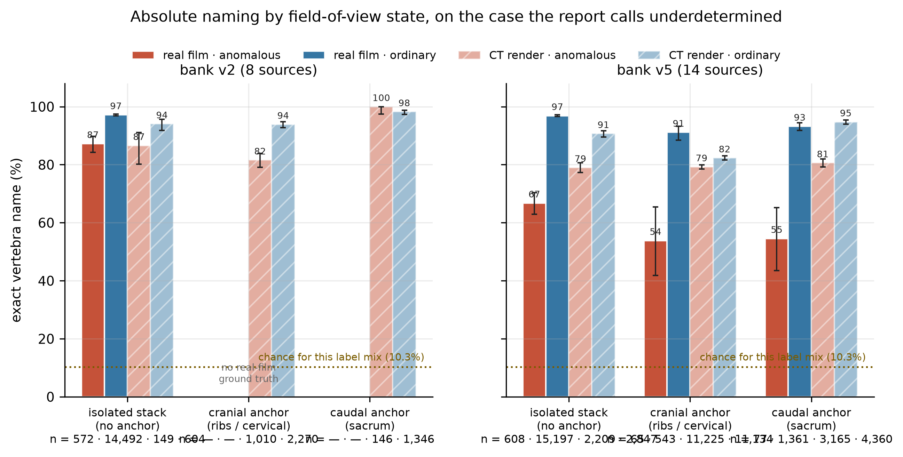
| K | Real film · anomalous (v2) | Real film · ordinary (v2) | Real film · anomalous (v5) | Render · anomalous (v2) |
|---|---|---|---|---|
| 2 | 60.5 [49.3, 70.8] n=76 | 92.5 [91.3, 93.5] n=2,130 | 41.5 [31.4, 52.3] n=82 | 83.3 [64.1, 93.3] n=24 |
| 3 | 82.9 [74.8, 88.8] n=111 | 95.6 [94.8, 96.2] n=3,156 | 61.8 [53.0, 69.9] n=123 | 88.2 [76.6, 94.5] n=51 |
| 4 | 85.0 [78.7, 89.7] n=160 | 97.3 [96.8, 97.8] n=4,036 | 57.1 [49.6, 64.4] n=168 | 83.3 [64.1, 93.3] n=24 |
| 5 | 100.0 n=225 (whole stack — not evidence) | 100.0 n=5,170 (whole stack) | 85.1 [80.0, 89.1] n=235 | 88.0 [76.2, 94.4] n=50 |
Table S1 — label-defined State C by window length. Read with the retraction below: a five-body window on a lumbar film is the whole annotated stack, whose names are fixed by the annotation convention, so the K=5 row is the convention reproduced, not naming. The K=2–4 rows still include windows touching an end of the stack, whose crops show the unlabelled sacrum or C2. The pixel-defined interior figures (tools/eval_interior_windows.py, film-cluster bootstrap, 2,000 resamples): ordinary lumbar 91.8% [89.4, 94.1] on 455 films for v2 (89.8% at two bodies, 93.8% at three) and 93.5% [91.4, 95.5] for v5; cervical 99.6% / 99.8%; anomalous lumbar 66.0% [39.6, 87.2] on 12 films (v2) and 57.3% [29.0, 78.6] on 17 films (v5). A placement-aware baseline that sees the film's edge scores 100% on these lumbar windows because BUU's names are the count; the model, shown interior pixels only, recovers 92–94% of that convention. No held-out film shares a patient stem with training (0.0%). The pseudolabel-trained v5 system loses at every length on anomalous spines while its ordinary curve is unchanged.
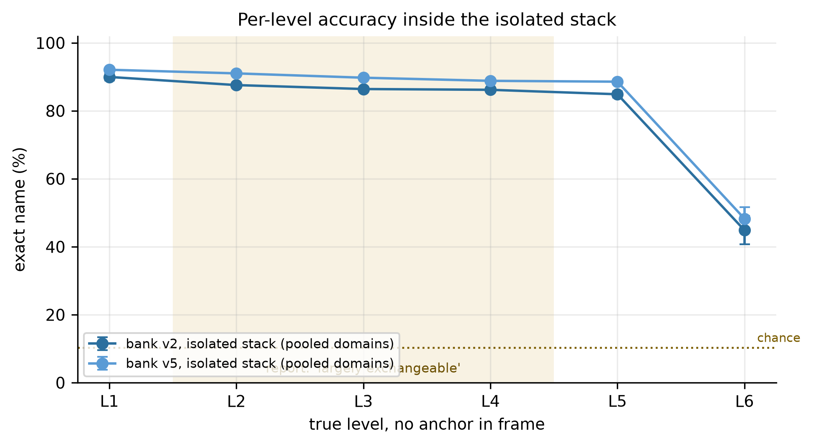
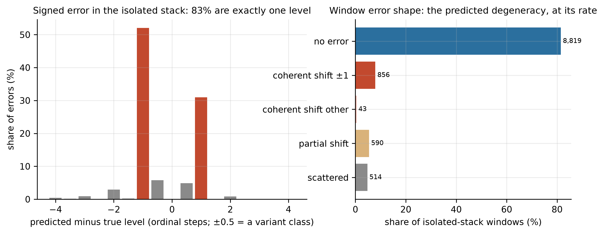
The interior-window result settles the argument and then hands over a real limitation: with no junction in the pixels, a transitional spine is named at about the rate of a coin toss between its two candidate identities. That limitation belongs to one exposure, not to the network. A surgeon's own remedy is not a better look at one picture, it is a series of pictures counted from a landmark — so we automated the series.
The radiographer starts with the sacrum at the edge of the field, exposes, moves one field minus about one vertebral body, exposes again, and repeats to the level of interest. The frames are linked by a correlation restricted to the step the protocol asked for — unrestricted, the periodic column locks one body off, which is the single documented failure mode of automatic vertebral localisation and accounted for all 47 failures in Otake 2012 — stitched into a panorama, and named twice: by counting from the landmark, and by the recurrent head over the whole chain with the variant alphabets open. Later limited-field frames register onto the panorama and take their names from the chain nodes they land on. No preoperative CT anywhere in it. A verified search found no published method that chains consecutive frames from a landmark to name what lies between them; the nearest, VDVM 2023, matches one C-arm frame against the same patient's full-length film and scores 0.733 on 31 images.
Every arm below uses the field of a 9-inch image intensifier, about 14 cm at the spine — what a mobile C-arm actually gives, not a whole-spine film.
| 801 abdominopelvic renders (sacrum to ~T10) · two bodies of overlap | 2 bodies in frame | 3 bodies | 4 bodies |
|---|---|---|---|
| the frame named on its own pixels | 69.6% | 85.9% | 91.2% |
| registered onto the sweep | 95.1% | 95.0% | 95.7% |
| 99% correct on this share of frames | 33% | 75% | 82% |
| 98% correct on this share | 87% | 87% | 91% |
| the registration put the frame in the right place | 96.8% | 97.1% | 96.5% |
| 76 whole-spine renders swept downward from C2 — the thoracic spine | 2 bodies | 3 bodies | 4 bodies |
|---|---|---|---|
| the frame named on its own pixels | 13.4% | 31.1% | 46.4% |
| registered onto the sweep | 97.1% | 99.3% | 98.6% |
The second table is the one the operating-room problem is stated at, and it is at full coverage with nothing declined. The chain came out complete on 97.4% of those spines and was named at 97.2%; on the nine spines in that set with a transitional vertebra, every mapped frame at every length was named correctly. A single frame there scores 13–46%, because the mid-thoracic spine has no landmark of its own — which is exactly why one centre booked 179 preoperative gold-fiducial placements in 38 months, 176 of them thoracic, purely to name the level.
The acquisition protocol, written for the radiographer rather than for us — which landmark, how far to move, how much overlap, and what to do when the system declines — is docs/SWEEP_PROTOCOL.md. Its operating point matches the only clinical stitching series in the literature: four to six exposures with 20–30% intended overlap.
From BUU's annotated corners, for every film and body: side heights, the upper end-plate chord, the report's squaring index Q, the height-wedge, and on laterals the sacral slope and the L5–S1 gap. No detector of ours is in the loop; whatever these indices can or cannot do here is a property of the indices on real film.
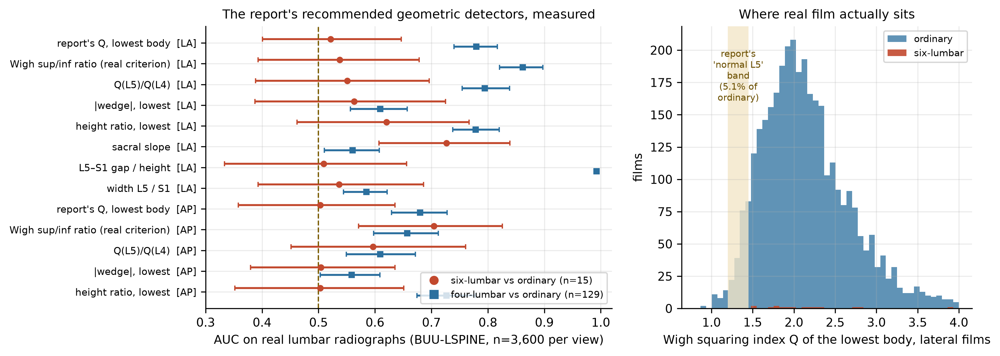
Using the CT flag table, spines were classed as ordinary (902), lumbosacral-only (98), thoracolumbar-only (47), or both (66)—the both-cell was two when the labels came from one cohort of 802 abdominopelvic scans that cannot see the upper ribs. Windows of K = 1…10 vertebrae were embedded with the frozen encoder and mean-pooled so feature dimension is constant across K, and a linear probe's balanced accuracy was measured for windows containing neither junction (the hypothesis) and windows containing one (the ceiling), each against a shuffled-label control.
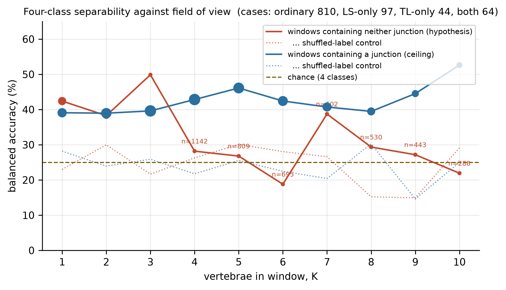
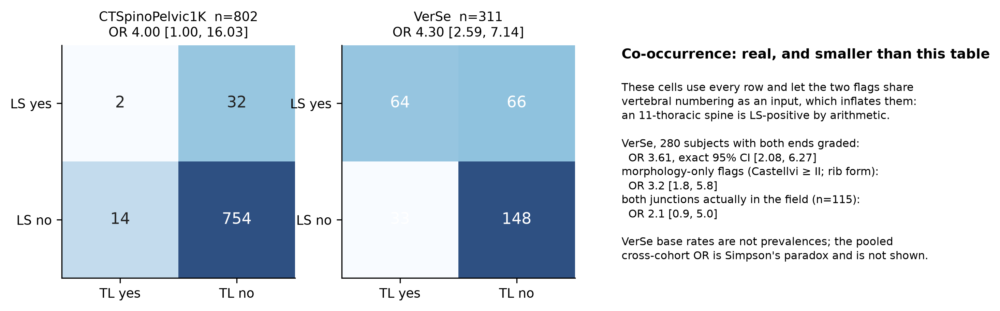
The within-source linear probe for anomalous versus ordinary from one distant vertebra gave AUC 0.65 on VerSe (shuffled 0.53), 0.51 on physics renders (0.49), and an unstable 0.63 on CTSpinoPelvic1K (54 positives). Honest reading: the information is present at K=1 and modest; measured on renders; with an encoder trained for naming, not for this; no field of view was found at which all spines sort. The threshold was not reached.
| Arm | Backbone | Loss | Bank | Real film | Render | BUU | NHANES |
|---|---|---|---|---|---|---|---|
| r18_ce_v3 | ResNet-18 | CE | v3 | 95.35 | 66.99 | 90.9 | 93.9 |
| r18_ce_v4 | ResNet-18 | CE | v4 | 95.31 | 67.34 | 91.1 | 93.3 |
| r18_ce (v2) | ResNet-18 | CE | v2 | 95.09 | 65.53 | 90.3 | 92.7 |
| r18_corn_v3 | ResNet-18 | CORN | v3 | 95.09 | 66.22 | 90.4 | 93.5 |
| r18_corn_v5 | ResNet-18 | CORN | v5 | 95.09 | 65.41 | 90.5 | 93.3 |
| r18_ce_v5 | ResNet-18 | CE | v5 | 95.00 | 65.76 | 90.1 | 94.3 |
| r18_corn | ResNet-18 | CORN | v2 | 94.79 | 65.16 | 90.0 | 93.7 |
| r18_ordfocal_v3 | ResNet-18 | ordinal focal | v3 | 93.85 | 64.66 | 88.5 | 92.0 |
| r18_ordfocal | ResNet-18 | ordinal focal | v2 | 92.55 | 60.86 | 86.6 | 89.7 |
| r18_ce_8ep | ResNet-18 | CE, 8 epochs | v2 | 91.91 | 54.53 | 86.0 | 85.9 |
| dinov3_frozen | DINOv3 | CE | v2 | 81.33 | 34.75 | 73.7 | 60.7 |
| dinov3_ft | DINOv3 (fine-tuned) | CE | v2 | 79.79 | 40.03 | 67.6 | 66.4 |
Table 3. Single crop (K=1) on one common held-out set. The run-level recurrent head over the same ResNet-18 encoder is the deployed system and reaches 99.95% on ordinary unanchored windows of five vertebrae; on anomalous spines its per-length behaviour is Table S1. Every ResNet-18 arm sits within 0.6 points of each other; DINOv3 loses ~15; nothing tested beats the recipe, which is why v6 changes the labels, not the architecture.
Every published number for vertebral level identification by humans and by software was searched and verified (106 agents, three-vote verification; docs/PRIOR_ART_LEVEL_ID_HUMANS_AND_AI.md). Task: E exact level named; R registration success against a labelled preoperative CT (not naming); S correct-level surgery outcome.
| study | reader / system | image, field | task | needs CT | anomalous | accuracy |
|---|---|---|---|---|---|---|
| Manbachi 2018 | 5 surgeons, unassisted | C-arm, single field, 62 hard cases | E | no | included, not stratified | 69.6% |
| Manbachi 2018 | surgeons + LevelCheck | same | E | yes | included | 97.6% |
| Ammerman 2006 | 1 surgeon, prospective | 100 lumbar discectomies | S | no | 4 transitional | 85% correct exposure |
| Mody 2008 / Mayer 2014 | surgeon surveys | career self-report | S | no | error driver | 50–68% ever wrong level |
| Otake 2012 / Lo 2015 / De Silva 2016 | LevelCheck | fluoroscopy | R | yes | shown, not stratified | 99.998% / 100% (registration) |
| Huang 2022 | CNN, registration-free | cadaver long-film, 100 images | E | no | no | 88.3% |
| Cina 2021 | CNN, registration-free | whole lumbar film, sacrum in frame | E | no | no | 98.4% published · on our films the task is saturated: ours 99.96% [99.9, 100] on 520 films = a sacrum-counting rule 99.96% |
| sacrum-anchored counting (our floor) | rule | interior 3-body windows of the same films | E | no | apart | 0% — nothing to anchor on |
| VERIDAH 2026 | DP labeller | 3-D MRI / CT, not radiograph | E (subject) | — | handled, recall only | 98.3% / 99.2% |
| this work, v2, limited field | ResNet-18 + BiGRU, registration-free | interior 3-body windows of the same films | E | no | apart | 92.7% [90.5, 95.0] ordinary · 53.3% [33.3, 75.0] anomalous |
| this work, v6, interior | same | real film, interior window, no anchor in pixels, 128 anomalous films | E | no | stratified | 89.9% [87.1, 92.7] ordinary · 49.9% [41.5, 58.9] anomalous · 99.4% cervical |
| this work, v2, interior | same | real film, interior window, no anchor in pixels | E | no | stratified | 91.8% [89.4, 94.1] ordinary · 66.0% [39.6, 87.2] anomalous (12 films) · 99.6% cervical |
Read plainly: on ordinary spines, registration-free interior naming exceeds the only registration-free comparator and unassisted surgeons on hard cases, and sits below LevelCheck-assisted surgeons, who need the CT. On anomalous spines it is the first number of its kind, on a par with unassisted surgeons on difficult cases and with a wide interval that v6's 144-film test set will narrow. Indicative, not head-to-head: images, fields and task definitions differ, and each row says so.
| ID | Claim | Verdict | Measurement |
|---|---|---|---|
| C1 | Isolated stack: absolute naming is underdetermined | disproved (operational) | real film, anomalous: 87.2% [84.3, 89.7]; 100% at K=5; ordinary 97.2% |
| C2 | L2–L4 largely exchangeable | disproved | L2 87.6, L3 86.4, L4 86.2% (v2); 91.0 / 89.8 / 88.8 (v5) |
| C3 | The failure is the integer offset P(B|M₅)≈P(B∖b₁|M₆) | confirmed (mechanism) | 83% of errors ±1; 45% of errored windows coherent shifts; 8.3% of all windows |
| C4 | CT-tuned thresholds collapse on film | confirmed, worse than stated | D1–D4 fire on 0–100% of NHANES / VinDr / AASCE |
| G1 | Normal L5 has Wigh Q in [1.20, 1.45] | disproved on real film | 5.1% of ordinary laterals in band; median 2.08; 0% on AP |
| G2 | Geometric indices transfer and detect LSTV | partly | six-lumbar: only sacral slope, AUC 0.73; four-lumbar: L5–S1 gap 0.99 |
| D1 | BUU keypoints enforce a rigid five-lumbar schema | confirmed (structure) | all 3,600 films carry L1a–L5b + S1a; the anomaly is a per-patient class on the S1a row (129 L4, 15 L6), not a relabelling; 9 of 15 "L6" reads are aged 7–17. Only "unrecorded" is refuted. |
| D2 | Decoder prefers variants by shifting an unanchored placement | retracted — a tautology of our code | full decode: 164/191 variant calls contain a sacrum; 9.0% variant rate with the sacrum vs 0.32% without; mostly false positives where the junction was visible |
| H1 | Four classes separable from a junction-free window | supported at K=1; no threshold | 42.4% balanced vs 25% chance, 23% shuffled |
| H2 | A distant vertebra carries a global anomaly signature | ambiguous | VerSe 0.65 vs 0.53 shuffled; physics 0.51 vs 0.49 |
| H3 | LS and TL anomalies co-occur | supported, smaller than first tabulated | all-rows OR 4.30 was inflated by count-coupling and 31 unknowns scored negative; VerSe 280 fully graded: 3.61 [2.08, 6.27]; morphology-only 3.2 [1.8, 5.8]; both junctions in field 2.1 [0.9, 5.0]; literature 1.9–13.7 |
| The report's own citations, checked against their sources | |||
| R1 | VERIDAH: 98.30% MRI / 99.18% CT, DP over a relaxed label graph | real, exact, but a preprint | arXiv:2601.14066; no radiograph result, no truncated-crop result, no false-positive rate |
| R2 | Stump-rib morphometry: −19.2 vs −13.8 mm, 260.6 vs 563.6 mm², F1 0.84, AUC 0.98 | no source exists | none of the seven numbers appears in any indexed paper; the literature's discriminant is a length threshold |
| R3 | "Wigh squaring index" Q with bands 1.20–1.45 / >1.80 / ≤1.35 | formula and thresholds not in the literature | the real criterion is one number: superior/inferior end-plate AP ratio ≤ 1.37 (Konin & Walz 2010, citing Wigh & Anthony 1981) |
| R4 | Intercrestal line at L4–L5 disc / lower L4 in 86.7% | real number, wrong definition | 86.7% is the L4 spinous process on prone fluoroscopy with LSTV excluded (Chakraverty 2007); against the body it is 72.7% (Walsh 2006) |
| R5 | AASCE is exclusively severe AIS (>40°) with C2 and sacrum visible | refuted | 609 public films split ~evenly mild/moderate/severe; held-out set 70% mild; C2 not in frame (Wang 2021, Table 2) |
| R6 | VinDr: 10,468 films, 13 lesion classes, zero level labels, MONOCHROME1 subset | partly | release is 10,466 files and 8 shipped lesion types; zero level labels is correct |
| R7 | Prevalence: presacral anomalies 5–10%, LSTV 4–36%, six lumbar 2–5% | confirmed | 8.8% of 3,147 full-length films lack 24 presacral segments (Sabri 2025); 6.7–9.6% across four cohorts |
| R8 | BUU forces five lumbar; "true L6 labelled L5" | geometry confirmed; mechanism invented | authors: "trained under the assumption that every person's spine consists of five lumbar vertebrae"; on sacralisation the fifth set of corners lands on S1 — which is why the L5–S1 gap "detector" scores 0.99: it measures the schema |
L6 is named correctly less than half the time (44.9% v2, 48.3% v5). A cranial anchor does not rescue an anomalous spine (81.6% on renders, the lowest anomalous figure of any state). Confidence intervals are on the vertebra and ignore clustering by film; the anomalous real-film test set was 20 films in v2 and 25 in v5. The separability and signature probes used renders. Results dependent on VinDr-SpineXR and AASCE require the reader's own data-use agreement to reproduce.
| intervention | what changed | measured |
|---|---|---|
| BUU schema correction | the "S1a" line promoted to an L6 box on six-lumbar studies (annotators counted down, so L1–L5 keep their names); L5 flagged sacralised on four-lumbar; all 144 barred from training; reader review package with overlays | per-study resize fit (scale 0.84–1.17) residual ≤ 1 px on all 15; 15 promoted, 129 flagged, 0 refused |
| film-noise model | scatter haze, Poisson + read noise, exposure, gamma, MTF blur, contrast window — knobs fitted by grid search to the real films' crop statistics; the bank builder refuses unfitted parameters | renders before: SNR 327 vs real 164, noise 0.0029 vs 0.0059; a guessed setting overshot (noise 0.049, SNR 20) and was discarded; fitted: sharpness 0.0068 (real 0.0078), noise 0.0073 (0.0059), SNR 136 (164) — inside the real band on 3 of 4 statistics |
| pseudolabel gating | a film's decoder names kept only when the placement is anchored (sacrum or rib zone ≥ 0.9) and not variant-flagged; the rest go to an annotation queue (11,323 films) | agreement with the 543 human-labelled NHANES films, matched by box geometry: cervical anchored 96.3% (n=970), lumbar anchored 89.9% (n=258), lumbar unanchored 100% (n=1,064). Two earlier versions reported 0.23% and 40% — an index zip, then a number-only key that collided a patient's cervical and lumbar films. High agreement on ordinary spines under a shared counting convention is not evidence about anomalous ones, where the pseudolabels cost twenty points. |
| film-look diffusion filter | SDXL LoRA trained on the public digitised X-ray datasets only (BUU, CSXA, NHANES, VinDr, AASCE, Mendeley, lateral-236), images only, equal weight per dataset × region, FluoroCap excluded by an assertion that aborts the build; applied to DRRs under a Canny ControlNet; renders whose vertebrae flip the encoder's answer on > 20% of bodies are dropped | training (job 40321779); apply and gate follow |
| synthetic-data scaling | six banks cut from v2 by film: synthetic fraction 0 / 0.25 / 0.5 / 1 with all real films, real fraction 0.25 / 0.5 with all renders; one 8-epoch encoder and head each; the interior evaluator on identical held-out films | running (job 40321409); first point, synthetic 0.25: ordinary 87.6%, anomalous 44.7% on 12 films |
| explainability | named regions of the target crop masked in turn — body, superior and inferior end-plate bands, posterior third, neighbour above, neighbour below — plus the inverse conditions (body only, end-plates only, both neighbours masked); per-level accuracy re-scored through the deployed head | interior L3 windows, real film (intact 90.0%, n=261): no single region is load-bearing — whole target body masked −2.3 pts; superior end-plate −0.4; inferior end-plate 0; posterior elements −0.4; neighbour above −1.9; neighbour below 0; body only visible 88.9%; end-plates only 90.4%; both neighbours masked 88.5%. C5 (99.7%): no region costs > 0.9. Identity is redundant and distributed; no ratio of two lengths is what the encoder reads — which is why the geometric indices failed on real film |
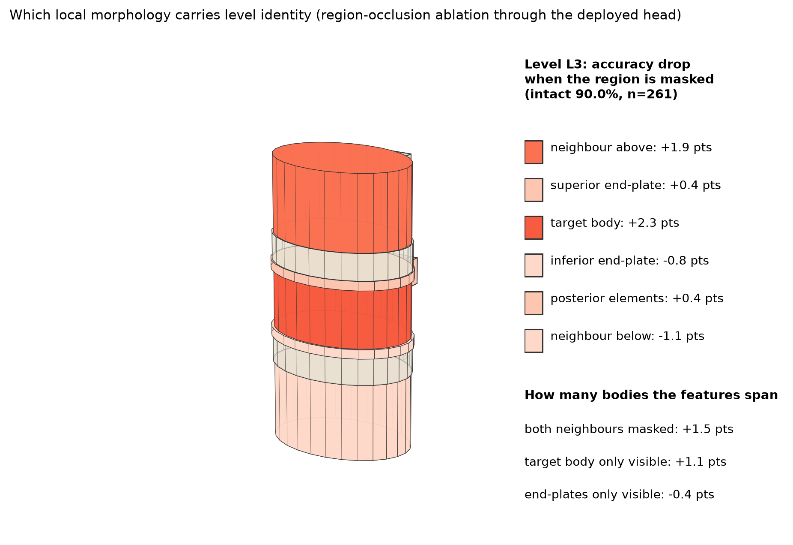
explain.json, never by hand. Every region is pale because no region is load-bearing: the information is redundant across the body, its end-plates and its neighbours.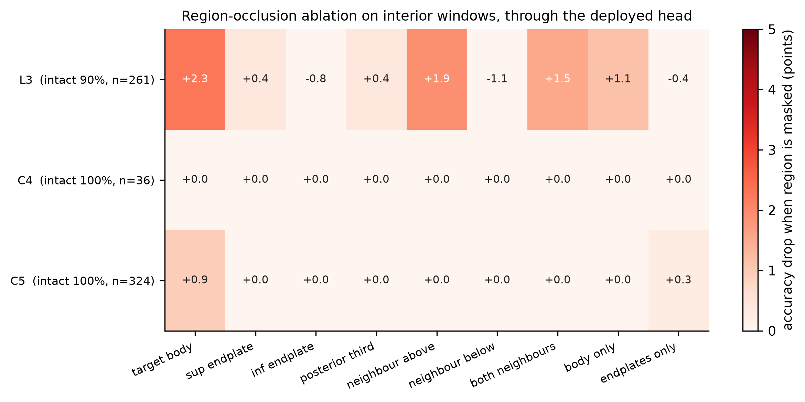
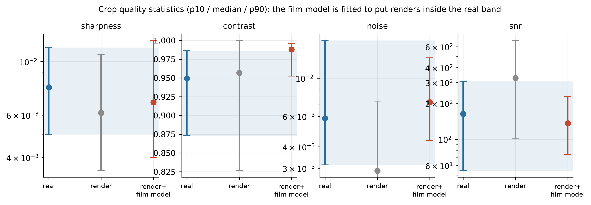
BUU's counted names are wrong on 144 of its 3,600 studies by the dataset's own reading, and 124 of those 144 sat in the training partition of every bank so far, labelled L1–L5. The 87% figure was therefore measured on a model trained to give the ordinary answer on the siblings of its test films. v6 moves all 144 to the test partition (a 144-film anomalous test set instead of 20), duplicates anomalous CT renders ×4 in training, and changes nothing else—so the ordinary column is a control rather than a moving target. Its number: on 4,026 label-defined State-C windows of real film from all 144 anomalous studies, exact naming is 81.3% [80.0, 82.4] (cross-entropy) and 81.4% (CORN), against 97.3% / 97.4% on ordinary spines; by window length 68.5% at two bodies, 63.4% at three, 78.4% at four (the five-body row is the whole stack and is not a claim). The 20-film 87% was optimistic by six points; the pseudolabel-trained 67% pessimistic by fourteen; the interval is now two points wide. On interior windows — no anchor in the pixels — v6's 128 anomalous films score 49.9% [41.5, 58.9] against 89.9% [87.1, 92.7] ordinary and 99.4% cervical: with the junction out of the picture an anomalous body is named at a coin toss between its two candidate identities. That is the one place the report's argument holds, and this page says so.
Repository: Gregory-Schwing-MD-PhD/spinesurg-ct-nnunet, branch L6_Class. Start at the README pointer, then docs/FEASIBILITY_REPRODUCE.md, which names the origin of every input and the number each stage owns. The manuscript source is paper/rsnai/main.tex (RSNA structure; the journal ships a Word template only) and compiles to 18 pages with zero unresolved references.
Every figure on this page was rendered by tools/make_feasibility_figures.py from result JSONs; a missing stage draws a panel that says so. Two things were discarded on the way here and are recorded rather than hidden: a claims run that paired a head with the wrong encoder (0–1% with a +2 offset, a mismatch signature, not a finding), and two separability runs that started before the four-class label file was complete and silently fell back to one cohort.